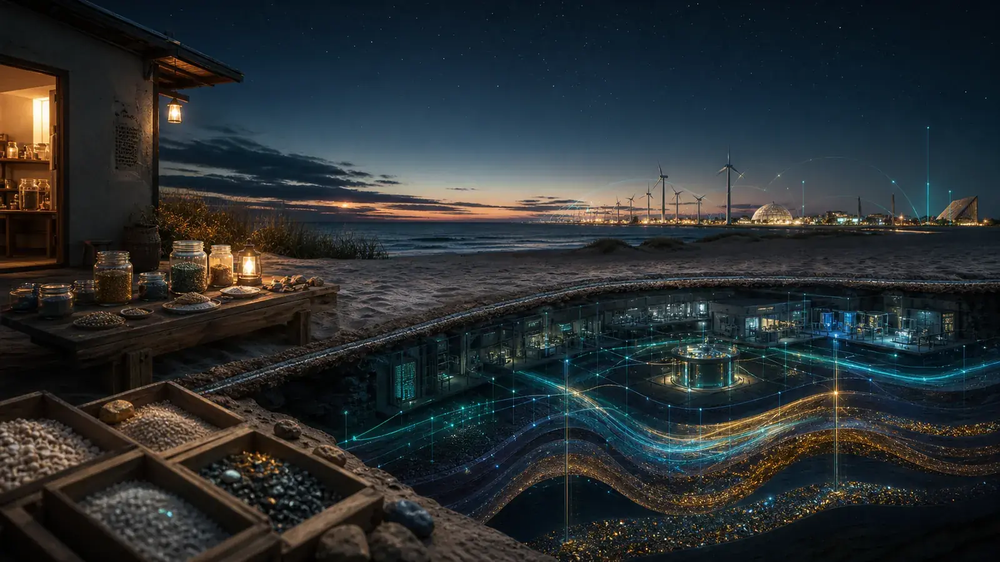

They can explain why shared assets need permission, care and a record.
Optional deep horizon
Mineral Moonshots is not the front door.
The deeper material can inspire builders, researchers and dreamers. Some visitors will want it early; others will prefer the practical base of trust, jobs, media, grants, assets and clear boundaries.

Rabbit hole discipline
Let people choose how deep they want to go.
Some people need a practical task first. Some need proof that a real job can come from this. Some want the big map immediately. Mineral-sands moonshots, subterranean systems, digital twins, sensoriums and spacefaring civilisation language belong as an opt-in depth, not a forced first impression.
That is not hiding the vision. It is giving people room to choose their own depth, build confidence, and connect the big ideas to evidence before scepticism turns reflexive.

Depth signals
When someone might want the bigger map.
Use these as signs of interest, not gates.
They know this includes ordinary jobs, training and services as well as moonshot systems.
They do not confuse public imagination with private data, legal authority or cultural permission.
They can ask "what is the next experiment?" instead of demanding certainty or rejecting everything.
The deeper material opens toward action, care, research, repair and better decisions.
The deep link is an opt-in path, not a surprise in the first viewport.
Deep links
For people who ask what comes after the local training base.
Mineral Moonshots can show how local sand, infrastructure, public honour boards, digital twins, materials, food systems, kiosks, sports networks and future-world thinking connect. This hub keeps it available as an optional shelf rather than making it carry the first conversation.
Depth options
Useful work and big imagination can meet at different speeds.
Some people will stay with local capability. Some will move through shared evidence first. Some will want the Mineral Moonshots map early and help translate it back into practical work.